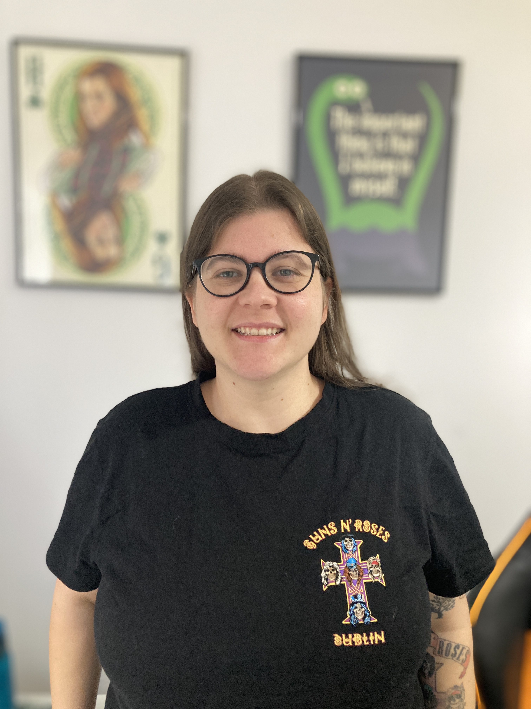

Hi!
I'm Tanise Carvalho.
Welcome to my page.

Cover Letter
I’m a Software Developer passionate about building clean, efficient, and user-focused web applications. I’m fluent in HTML, CSS, JavaScript, PHP, Java, and Python, and I enjoy working across the entire development cycle — from concept to deployment.
With eight years of experience in software development across the financial and educational sectors, I’ve developed a strong foundation in both backend and frontend technologies. After moving to Ireland in 2017, I took a step back from the industry to pursue a First-Class Honours Degree in Business (IT Pathway), focusing on strengthening my soft and managerial skills. During that time, I continued to stay close to technology — exploring new tools, completing online courses and bootcamps, and earning certifications.
Since 2023, I have been working as a Software Developer at Version 1. My stack consists of Java, Angular, Typescript, Springboot, Oracle SQL, etc.
I have recently joined the National College of Ireland to pursue a Higher Diploma in Science in Computing (Software Development), where I want to align my work experience with my education and in the future join a Masters in Computing.
I’m passionate about technology that simplifies processes and empowers people, and I’m always looking for opportunities to create meaningful digital solutions.